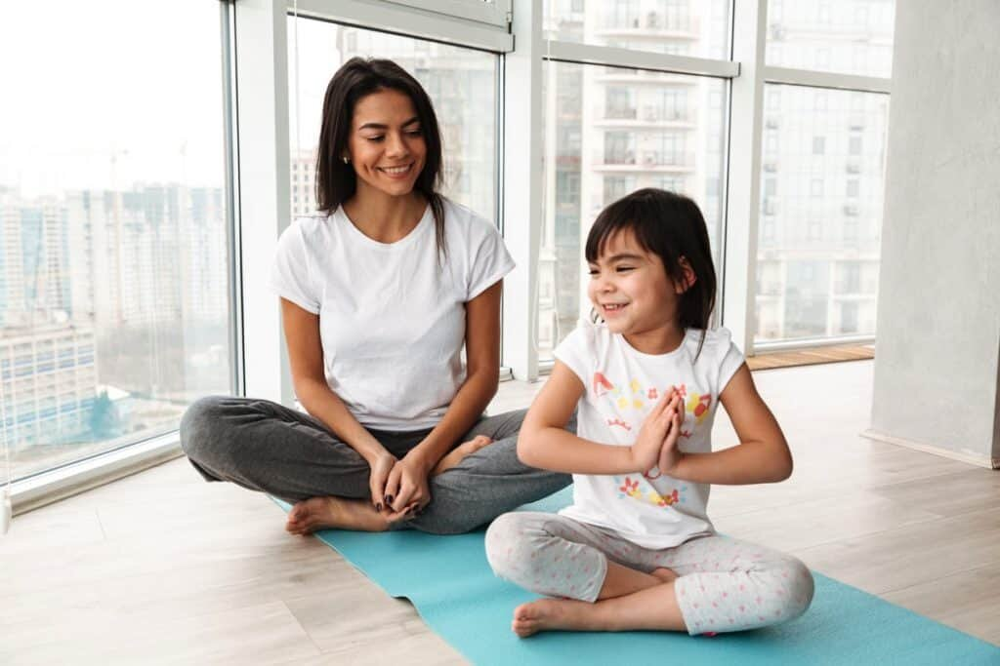

Muchas veces criticamos el sistema educativo en el que estamos inmersos y cuestionamos prácticas que no responden a las necesidades de nuestros niños y niñas. Sin embargo, se nos puede ir la vida esperando que el sistema cambie y las decisiones gubernamentales piensen más en la infancia que en sus propios beneficios. Es por ello, que la invitación es a buscar dentro de nuestras posibilidades la manera de colaborar, aportar a dicha transformación necesaria. Si concientizamos los recursos que poseemos y que están a nuestra disposición, sabremos que las herramientas están más cerca de lo que pensamos.
Todos conocemos que las metodologías que han sido usadas durante siglos con niños, niñas y adolescentes, no respetan al ser en su totalidad, ya que atienden a un ser humano fragmentado, focalizando la atención a los canales visuales y auditivos.
A los niños y niñas les gusta jugar, moverse y descubrir el mundo mediante su canal kinestésico, para así responder a esa necesidad sensorio-motriz que naturalmente los impulsa. Lo pertinente es acompañar el proceso de aprendizaje de esta manera, de una forma íntegra donde el ser exista en todos sus niveles: físico, mental, emocional y espiritual.
Es por ello que el yoga infantil puede convertirse en una tremenda herramienta, en una metodología donde la gestión y planificación de actividades nace de la integración del ser, para volver a esa unidad que somos. Para valorar la práctica del yoga como tal, es necesario comprender que ella es una disciplina que busca reunir aquellos fragmentos para construir un ser en unidad, que por naturaleza existe.
Si valoramos y educamos desde esa perspectiva, donde no hay arista más importante que otra, sino que en integridad avanzamos, obtenemos un proceso y resultado donde los y las involucradas han atendido a todo lo que son.
Por medio del yoga infantil podemos aportar en la salud física, mental, emocional y espiritual de toda una sociedad, ya que al querer instaurarlo como práctica educativa es responsabilidad de todos y todas conocernos, estudiarnos y evolucionar constantemente.
Cuando se valora como tal, como en líneas anteriores ha quedado plasmado, la visión se amplifica cada vez más y nuestra labor se empodera, se enaltece, se magnifica.
Esta disciplina al conjugarla con el juego, interés atávico de la infancia, resulta brindar experiencias significativas que trascienden el contexto e impacta mucho más allá de lo que se espera o se ha esperado. Pero todo esto es posible visibilizar cuando la visión está direccionada más allá de nuestros propios horizontes y somos capaces de ir más allá… de mira, de
percibir, de sentir, de escuchar, de reflexionar, de crear más allá de donde nos han enseñado.
Aquí algunos ejemplos de cómo la visión amplificada nos permite descubrir el yoga en su amplitud:
Mediante trabajo de Posturas
- Conocer clasificación de faunas, hábitat, alimentación, etc.
- Favorecer el proceso de la lecto-escritura, al conocer el nombre de las asanas mediante láminas.
- Potenciar el proceso lógico-matemático, a través del conteo de duración de una postura.
- Estimular el interés por los idiomas, ya que al contar podemos hacerlo en inglés, francés, etc.
- Investigar sobre anatomía, todo lo que tiene que ver con los huesos y músculos involucrados en cada postura.
Mediante Dinámicas de Respiración
- Beneficiar el sistema fono-articulatorio, para un mejor lenguaje oral, contribuyendo al proceso lector de niños y niñas.
- Mediante técnicas, podemos abarcar el sistema respiratorio en sí y cómo este funciona dentro de nuestro cuerpo. Así como también, secuencias numéricas para el conteo de la duración de cada respiración.
Mediante Dinámicas de Relajación
- Contribuir al proceso cognitivo de atención-concentración, para una disposición más alerta y sostenida a cada experiencias educativa.
- La relajación nos permite, desarrollar la escucha, ya que por medio del relato de una historia, los y las invitamos a focalizar en ello la atención.
Peggysue.S.S